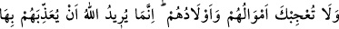
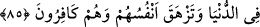
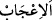

1. Peygamberimiz’in (a.s.) amcası Abbas, Bedir savaşında esir alınmıştı. Uzun boylu
olduğu için de boyuna denk gelecek bir elbise bulunamamıştı. Bunun üzerine
münâfıkların reisi Abdullah ona kendi elbisesini vermişti. İşte Peygamber Efendimiz
(a.s.), kendi gömleğini ona onu onurlandırmak için değil amcasına yaptığı o iyiliğin bir
mükafatı olarak vermiştir.
2. Allah Teâlâ Rasûlü’ne: “İsteyeni de sakın azarlama.” (ed-Duhâ, 93/10) buyurarak
kendisinden bir şey isteyeni geri çevirmemesini emretmiştir. Gömleğini esirgeyip onu
bilhassa kendisinden istendiği bir anda göndermemesi, onun keremini ihlal eden bir
hareket olurdu.
3. Belki de Peygamber Efendimiz’e “Eğer sen gömleğini ona verirsen, senin bu
hareketin münâfıklardan bin kişinin İslâm’a girmesine vesile olacaktır.” diye
vahyedilmiştir. O da buna binaen gömleğini vermiştir.
Durumun hakikatini ve sözün özünü en iyi bilen Allah’tır. Bize kabul etmekten başka
bir şey düşmez. Hakikatin yolunu gösteren de yine O’dur.
85. Onların malları ve evlatları seni hayrete düşürmesin: Allah onlara dünyada
bunlarla azap etmeyi ve kâfir olarak canlarının çıkmasını istiyor.
“Onların” münâfıkların “malları ve evlatları” Kâşifî’nin açıklamasına göre:
münâfıkların malları her ne kadar çok ve evlatları güçlü ve kuvvetli ise de “seni
hayrete düşürmesin” “
”, şaşkınlık göstermek, hayret etmek demektir. Hitap
Peygamberimiz’edir, murad ümmettir. Yani sizi hayrete düşürmesin.
Çocuklar daha kıymetli oldukları halde bu gibi yerlerde malların evlatlardan önce
zikredilmesi şu sebeplerden dolayı olabilir:
1. Mala duyulan ihtiyacın zat, fertler ve vakitler itibarıyla daha umumi olmasından.
Çünkü mallar, anne-baba ve çocuklar için her zaman bulunması gereken şeylerdendir.
Hatta malı olmadığı halde çocukları olan kişinin hem kendisi hem de çocukları sıkıntı
ve şiddetli musibet içerisinde kalır. Ayrıca çocuk sahibi olmayı, ancak baba olabilecek
çağa ulaşan kimse ister.
2. Mal, nefsin bekâsı için, çocuklar ise nev’in/insan cinsinin bekâsı içindir.
3. Mal, çocuklardan önce mevcuddur. Çünkü meni ancak gıdalardan meydana gelir.
“Allah, onlara dünyada bunlarla” bahşettiği mallar ve evlatlar ile “azap etmeyi”
istiyor. Çünkü mal biriktirip onları muhafaza etmeleri sebebiyle sürekli sıkıntıdadırlar.
Çocuklarının durumlarını iyileştirmek ve onların ihtiyaçlarını gidermek için daima
mihnet ve meşakkat çekerler.
“Ve” kendilerine verilen mal ve evlatlarla zevk u safâ sürmeleri, âkibetlerinin ne